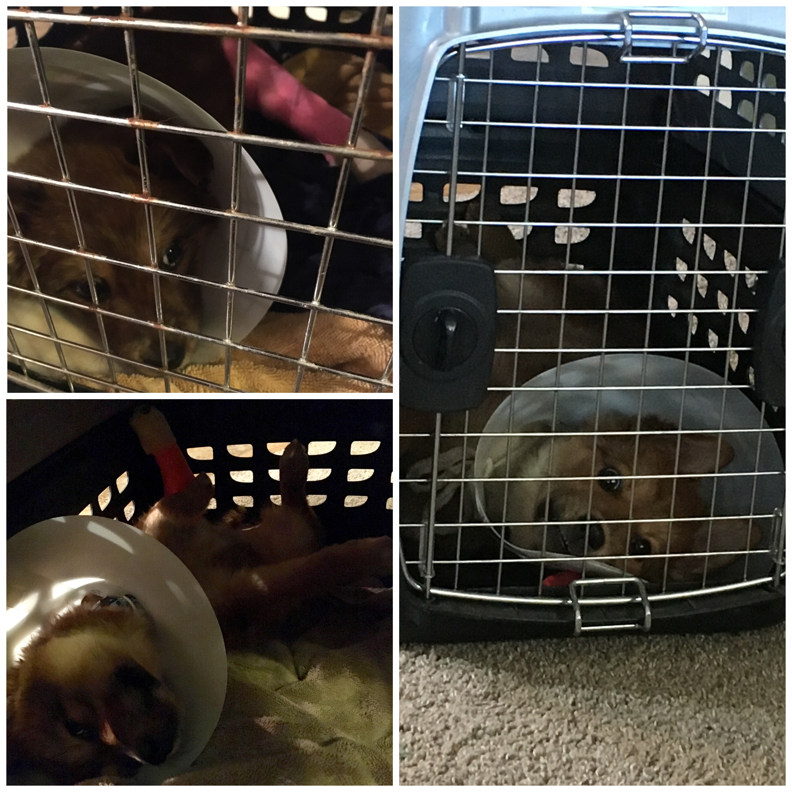

Ellie's StoryThis story made me sad since Ellie was so small, but it was a major event that took over our whole summer! We brought our new puppy, Ellie, home on April 26th of 2018. She was about 10 weeks old and full of energy! On May 3rd, she was staying with my husband’s family while I was at school and he was at work. She was on top of the bed, she saw a cat, and made a jump for it. She obviously was too small to make that large of a leap and broke her left back leg. The vet told us she would have to be confined to a small kennel for 12 weeks! Ellie is a German shepherd/ Australian Shepherd mix. She is also a baby. This means she has a ton of energy! It felt like we were torturing her keeping her in the kennel. She just wanted to play and run around and cuddle with her new family. She would sit and stare at me, hoping I would let her out already! She would not sit still. We thought we would try some music. It turns out, Ellie loves blue grass gospel music, exclusively. If we played this music she would lay down and stay calm. For about 12 weeks, bluegrass gospel music played next to her kennel. The whole experience definitely put a damper on her summer, and mine. I was hoping to train her, and this majorly delayed my chance. Of course, now she is up and doing great. She still is a giant ball of energy. I have not played bluegrass for her in a while. I wonder if it still works! |
 |